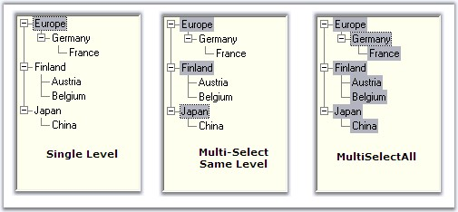

During drag and drop operation of the tree nodes, a single node or same level nodes or multi level nodes can be selected and dragged based on the selection mode set for the treeview control. SelectionMode property is used for this purpose.
|
TreeViewAdv Properties |
Description |
|
SelectionMode |
Specifies the selection mode of the treeview. Options are,
Single - The user can only select one node at a time and implement the drag-drop operation in the TreeViewAdv (Default). MultiSelectSameLevel - The user can only select nodes of the same level, i.e. only child nodes or only parent nodes. MultiSelectAll - The user can select multiple nodes for implementing the DragDrop operation in the TreeViewAdv. |
|
[C#]
this.treeViewAdv1.SelectionMode = TreeSelectionMode.MultiSelectSameLevel; |
|
[VB.NET]
Me.treeViewAdv1.SelectionMode = TreeSelectionMode.MultiSelectSameLevel |

Figure 1137: Various Selection mode of TreeView Control
Extending the Selection
We can extend the selection of the nodes using ExtendSelectionTo method.
|
Methods |
Parameter |
|
ExtendSelectionTo |
Extends the selection of the node to a specified node.
SelNode - Represents a treeNodeAdv. |
|
ExtendSelectionTo (Overloaded) |
SelNode - Represents a treeNodeAdv. removeCurrentMultipleSelection - Indicates whether or not any current selection should be removed. |
 Note : This method will be effective only
when the SelectionMode is MultiSelectSameLevel or MultiSelectAll.
Note : This method will be effective only
when the SelectionMode is MultiSelectSameLevel or MultiSelectAll.
|
[C#]
//Extend Selection using below method this.treeViewAdv1.ExtendSelectionTo(this.treenode1); //Overloaded Method this.treeViewAdv1.ExtendSelectionTo(this.treenode1, false); |
|
[VB.NET]
'Extend Selection using below method Me.treeViewAdv1.ExtendSelectionTo(Me.treenode1) 'Overloaded Method Me.treeViewAdv1.ExtendSelectionTo(Me.treenode1, False) |
On Focus / Off Focus
|
TreeViewAdv Properties |
Description |
|
ShouldSelectNodeOnEnter |
Indicates whether a default node should be selected when the treeviewadv control gains focus. By default this property is true. |
|
HideSelection |
Indicates if the treeviewadv hides its selected nodes when not focussed. This should be set to false to highlight the select the nodes. |
See Also
How to select a particular node as a first visible node?
Setting AllowKeyboardSearch property of the treeview to true, will allow the user to search for a node by typing the name of the node using the keyboard. User have to ensure that the TreeViewAdv control is focussed while searching.
By setting the AllowMouseBasedSelection property to true, multiple nodes can be selected with mouse down and these selected nodes can be dragged.
|
TreeViewAdv Properties |
Description |
|
AllowKeyboardSearch |
Gets or sets a value indicating if keyboard based searching should be allowed. |
|
AllowMouseBasedSelection |
Indicates if multiple nodes can be selected with mouse down and drag. |
|
[C#]
this.treeViewAdv1.AllowKeyboardSearch = false; this.treeViewAdv1.AllowMouseBasedSelection = true; |
|
[VB.NET]
Me.treeViewAdv1.AllowKeyboardSearch = False Me.treeViewAdv1.AllowMouseBasedSelection = True |